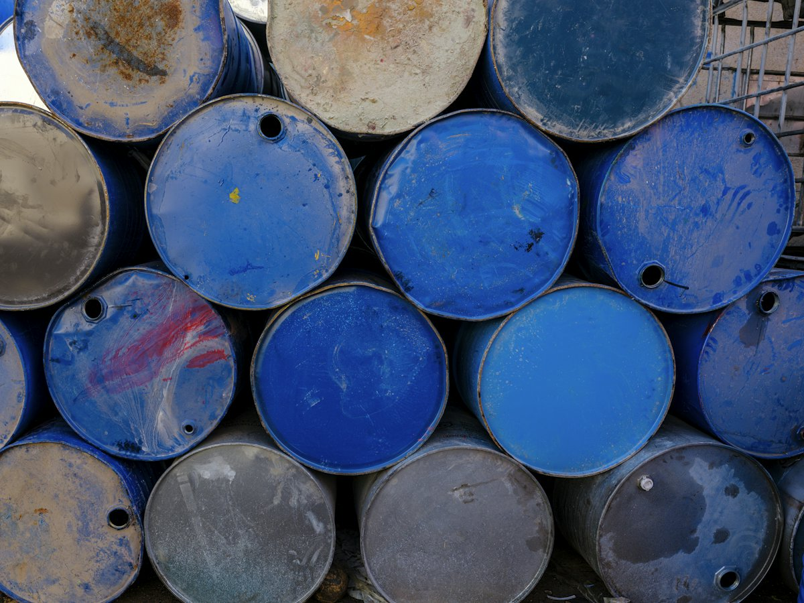
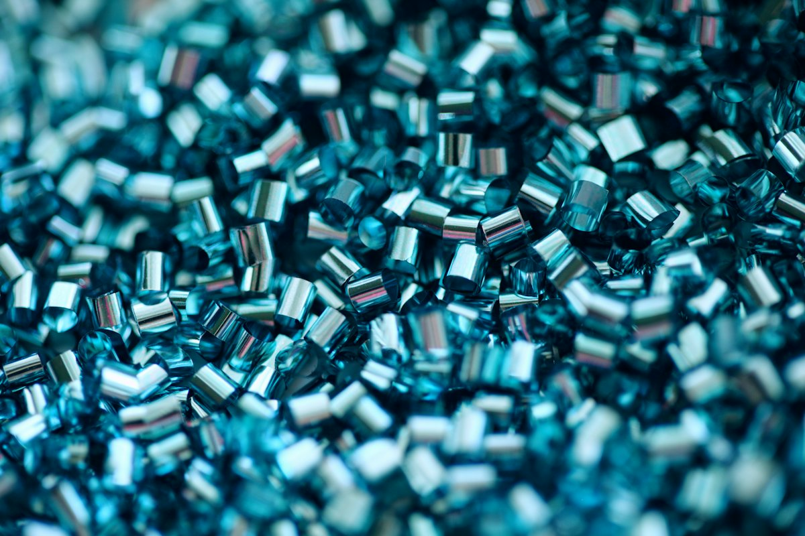
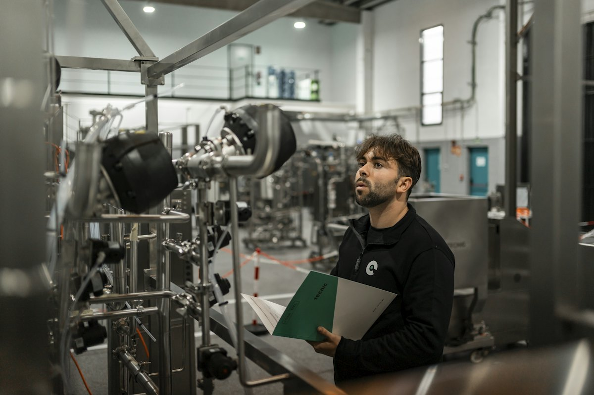
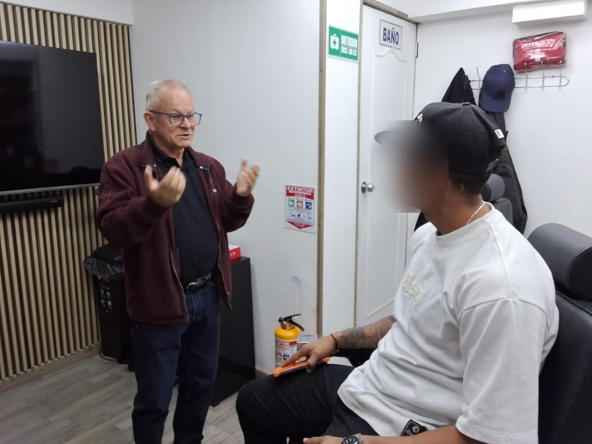
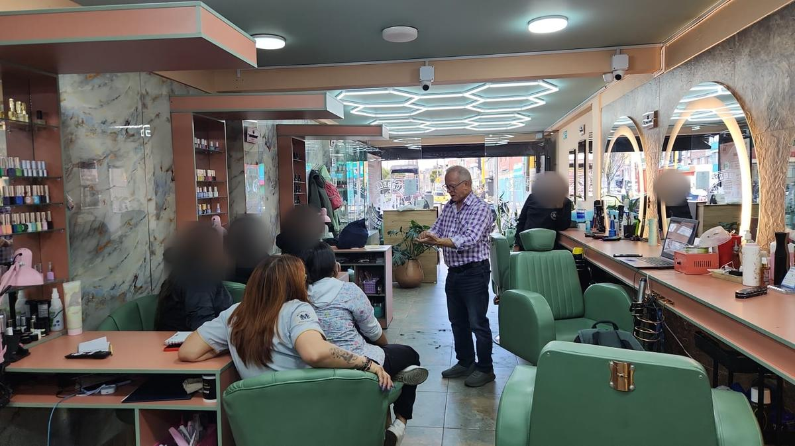
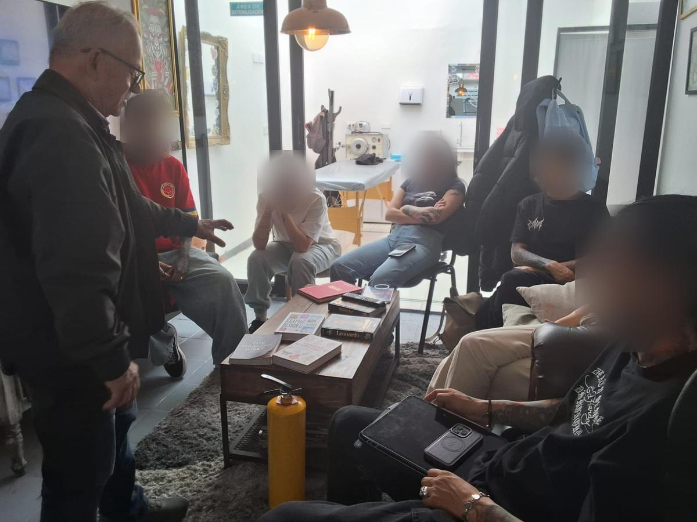
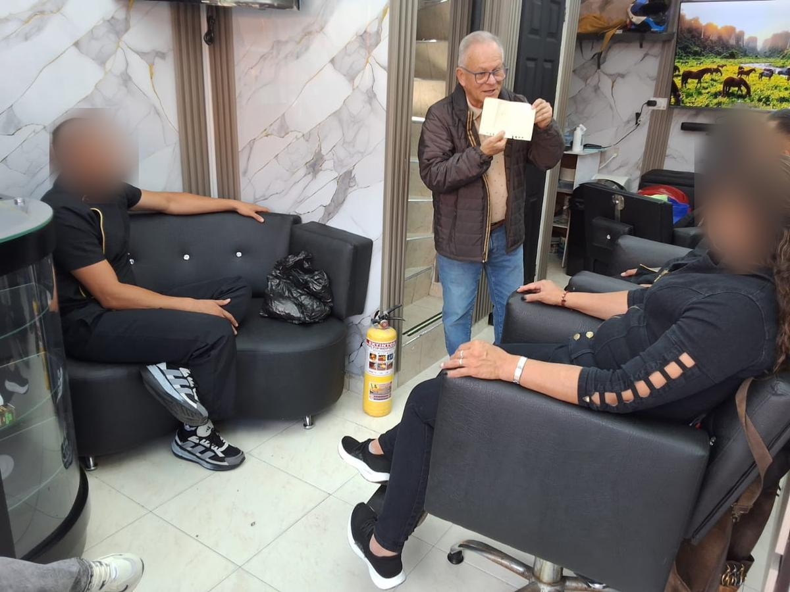
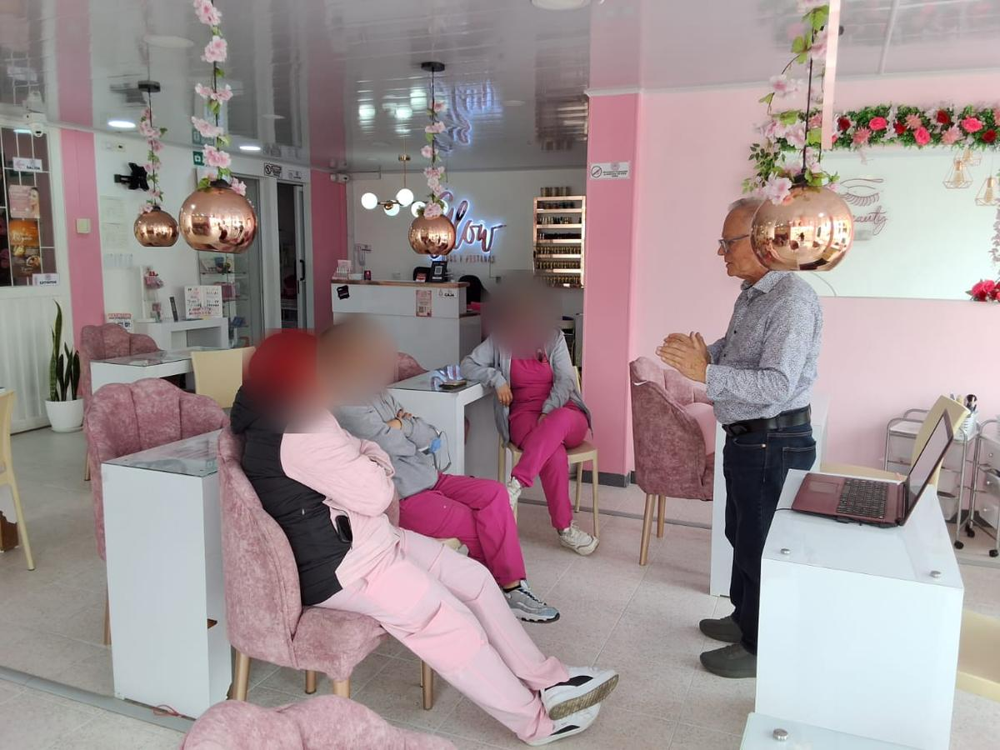

Consultoría ambiental para empresas
Evita multas, cierres y sobrecostos ambientales antes de que lleguen.
Ayudamos a las empresas a identificar riesgos ambientales, prevenir incumplimientos, reducir costos y fortalecer su desempeño ambiental.
- 4 preguntas, menos de un minuto
- Sin compromiso
- Te responde un asesor de ECO UP


Lo que arriesgas si no cumples
No cumplir sale mucho más caro que prevenir.
Multa máxima por infracción ambiental
100.000
salarios mínimos mensuales
Es el tope que fijó la Ley 2387 de 2024. Antes era de 5.000: se multiplicó por veinte.
Cierre temporal o definitivo
La misma ley contempla el cierre del establecimiento como sanción. Cada día detenido es producción y ventas que no vuelven.
Respondes por lo que haga tu gestor
Tu responsabilidad sobre un residuo peligroso se mantiene hasta que se aprovecha o se dispone de forma definitiva. Si el gestor falla, la autoridad también te busca a ti.
Clientes y contratos en juego
Si tus clientes te exigen evidencias ambientales, un hallazgo sin cerrar puede dejarte fuera de la lista de proveedores.
Referencias: Ley 1333 de 2009, modificada por la Ley 2387 de 2024 (art. 40), y Decreto 1076 de 2015 (art. 2.2.6.1.3.3).
La diferencia
Enterarte por la autoridad o enterarte antes.
Si esperas a la visita
- Te enteras del incumplimiento cuando ya hay un requerimiento.
- No sabes qué hizo tu gestor con los residuos que entregaste.
- Pagas por tratar o disponer materiales que podrían aprovecharse.
- Le respondes a tu cliente sin evidencias que mostrar.
Si lo revisas con ECO UP
- Sabes qué estás incumpliendo y en qué orden corregirlo.
- Tienes la trazabilidad verificada hasta el destino autorizado.
- Sabes qué materiales pueden convertirse en ahorro.
- Tienes informes, matrices y planes de acción para mostrar.
Empieza por aquí
¿Qué te preocupa hoy?
Te conviene empezar por
Auditoría y cumplimiento ambiental
- Diagnóstico ambiental integralInforme de diagnóstico y prioridades
- Evaluación de cumplimiento legalMatriz legal y evaluación de evidencias
Auditoría y cumplimiento ambiental empresarial
Identificamos los riesgos ambientales de tu operación antes de que se conviertan en incumplimientos, sobrecostos o problemas con clientes y autoridades.

Ver 3 servicios más de esta líneaVer menos
Auditoría y evaluación de gestores de residuos
Tu responsabilidad ambiental no termina cuando entregas los residuos. Verificamos su manejo y trazabilidad hasta el destino autorizado.
Ver 3 servicios más de esta líneaVer menos
Antes de pagar por el tratamiento o la disposición de un material, evaluamos si existe una alternativa técnica, legal y económicamente viable para su aprovechamiento.
Economía circular y valorización de recursos
Identificamos materiales, excedentes y subproductos que pueden convertirse en oportunidades de ahorro y aprovechamiento. Con una revisión técnica, materias primas y sustancias químicas reciben una segunda oportunidad en otro proceso productivo.
Ver 3 servicios más de esta líneaVer menos
¿Tienes una visita, un requerimiento o una auditoría cerca?
Dinos la fecha y te decimos por dónde empezar para llegar preparado.
Nuestro equipo en campo
Vamos hasta tu operación y capacitamos a tu gente.





Capacitación y sensibilización en sitio. Los rostros de los asistentes se difuminan para proteger su privacidad.
Soluciones complementarias
Lo que refuerza las tres líneas.
Para quién trabajamos
Elige tu sector y cuéntanos tu caso.
Qué pasa cuando nos escribes
De tu mensaje al plan de acción, sin vueltas.
Conversamos
Nos cuentas qué hace tu empresa y qué te preocupa. Definimos el alcance.
Revisamos
Analizamos documentos, procesos e instalaciones según la línea que necesites.
Entregamos
Recibes un informe claro con hallazgos, prioridades y acciones propuestas.
Acompañamos
Hacemos seguimiento hasta cerrar los hallazgos, si así lo quieres.
Preguntas frecuentes
Lo que suelen preguntarnos.
¿Qué sanciones puede recibir mi empresa por un incumplimiento ambiental?
La ley contempla amonestación escrita, multas de hasta 100.000 salarios mínimos mensuales y el cierre temporal o definitivo del establecimiento, entre otras. El monto depende de cada caso; por eso conviene detectar y corregir los incumplimientos antes de que lo haga la autoridad.
Ya le entrego mis residuos a un gestor. ¿Por qué auditarlo?
Porque tu responsabilidad ambiental no termina cuando entregas los residuos. Verificamos los permisos del gestor, cómo los maneja en sus instalaciones y la trazabilidad hasta el destino autorizado.
¿Qué recibo al terminar el trabajo?
Un entregable concreto según el servicio: informe de diagnóstico, matriz legal, informe de auditoría, matriz comparativa de gestores o plan de acción con indicadores, entre otros.
¿Trabajan con empresas que tienen o buscan ISO 14001?
Sí. Hacemos auditoría interna ISO 14001 y acompañamos la preparación para la certificación con un diagnóstico de brechas y un plan de cierre.
¿Pueden auditar a uno de mis proveedores?
Sí. Hacemos auditorías de segunda parte: evaluamos a un proveedor por encargo tuyo y te entregamos el informe a ti como contratante.
¿Cómo sé si un residuo de mi empresa se puede aprovechar?
Revisamos sus características, composición y riesgos, comparamos lo que cuesta tratarlo con lo que cuesta aprovecharlo y buscamos sectores o procesos que podrían utilizarlo.
Empecemos
Corrige hoy lo que mañana puede ser una sanción.
Responde cuatro preguntas rápidas y te abrimos WhatsApp con tu mensaje listo, para que un asesor te oriente sobre la línea que más le conviene a tu operación.
- 4 preguntas, menos de un minuto
- Sin compromiso
- Te responde un asesor de ECO UP